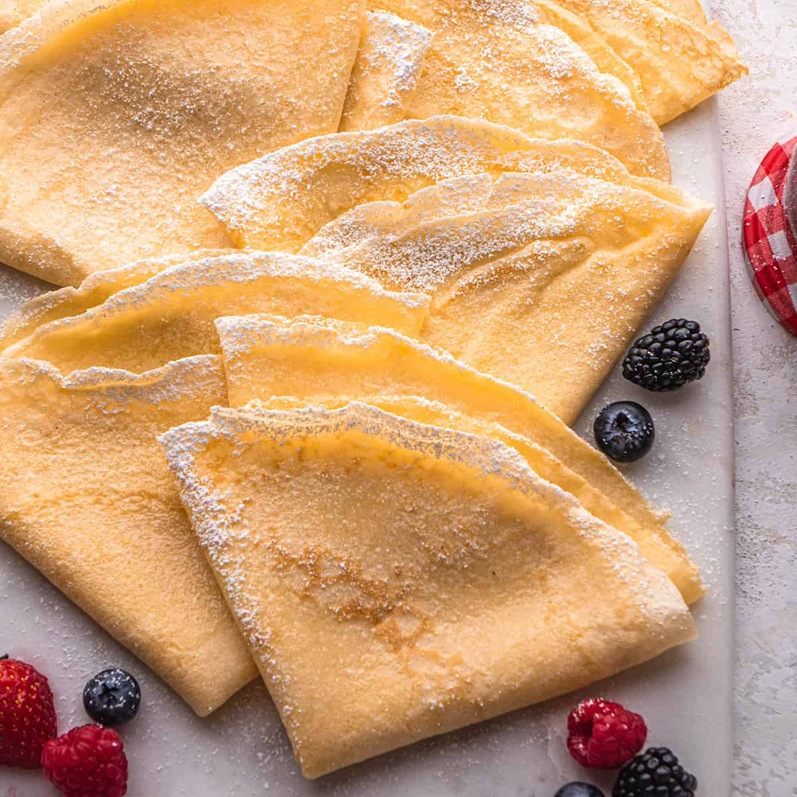

Best Crepe Recipe

The best crepe recipe – they are buttery & thin with a rich vanilla flavor. This easy crepe recipe is made in 5 minutes with 6 ingredients and can be prepared in advance & stored in the refrigerator. Serve them with a variety of fillings (jam, whipped cream, etc.) a dusting of powdered sugar or a drizzle of maple syrup.
Ingredients for the crepes
- Whole milk. 2% milk and half and half both work well in this recipe.
- Eggs. There are no substitutions for eggs.
- Pure vanilla extract. I prefer that our crepes have a rich, vanilla flavor. You can reduce the amount or add in other extracts (almond, orange, etc.) to change the flavors. Vanilla bean paste or the seeds from one vanilla bean can be used in place of extract.
- All-purpose flour. I don’t suggest substituting the flour, although bread flour does work well.
- Granulated sugar. honey can be used in place of granulated sugar.
Step-by-Step instructions on how to make crepes
The batter for this crepe recipe is really easy to make in 5 minutes (or less) in the blender. It does take some time to cook each individual crepe in a crepe pan or large nonstick pan, so keep that in mind.
- Begin by making the batter. Simply add the ingredients in the order listed into the container of a blender.
- Start blending on low speed, then increase to high and blend on high speed for 30-50 seconds until mixture is smooth.
- Chill in the refrigerator for at least one hour. You can also chill it overnight and for up to 5 days.
- Cook each crepe individually in a nonstick frying pan or crepe pan over medium heat.
- Start by melting 1 teaspoon of butter into the pan and swirl it around.
Note: Cooking the crepes in butter (and not just greasing the pan with cooking spray) is critical for making the best crepes.
- Pour ¼ cup of batter in the center of the pan and swirl it around to evenly distribute it in a circle on the surface of the pan.
- Cook the crepe for 2-3 minutes on the first side, until parts of it are lightly golden brown and bubble form in the batter and the edges are set.
- Flip and cook on the second side for 2-3 minutes until lightly golden brown in some places.
- Repeat
Very important: After every 2 crepes, add another tsp of butter to the pan and swirl it around. Then cook 2 more, add another tsp of butter. etc. until all the batter is used. This recipe makes 15-16 crepes. The butter makes the crepes golden-brown and so delicious.